William Drury (known to the family as Bill) was born in Loughborough on 11 November 1897, the first child of Tom and Lucy Drury. Father Tom Drury was a printers compositor for one of the town's printers and the family lived at 61 Station Street Loughborough.
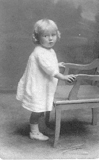
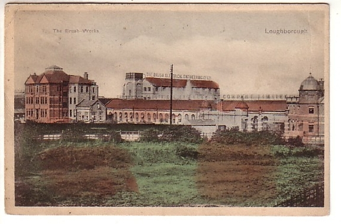
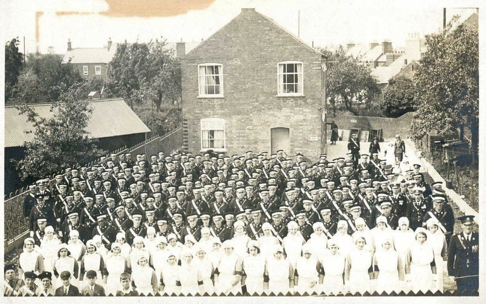
His early years in Loughborough are on the whole undocumented, although it is thought that he went to Cobden Street School. He began an electrical apprenticeship at Loughborough College in 1911, completing his Loughborough Technical Institute examinations in 1914. Bill was also a member of the St John's Ambulance, passing his first aid examinations in the same year. By 1914 the family were living in Devonshire Square, which adjoins the Market Square in the heart of the town. William worked in the winding shop of the Brush Company in Loughborough until his enlistment in the army.
War broke out in August 1914 and William's father, although 41, enlisted in the September. William himself enlisted soon after, according to his own reminiscences on November 16 1914, he was just 17 years old and under age (although his army service number places his date of enlistment as June 1915). His service record has since been lost but it has been possible to piece together a record of his army service.
Read about William's war service in more detail
He was assigned to D Company of the 2/5 Battalion the Leicestershire Regiment, part of the 177 Brigade, 59th Division. The 59th was a second line division that was stationed in the Luton area. They never actually saw any front line combat as a division before 1917, but instead were tasked with refilling the ranks of their first line sister division, the 46th (North Midland) Division, serving on the Western Front.
However, in April of 1916 the 177th Brigade of the 59th Division was sent to Ireland to help put down the Easter Rising. They served in Dublin and the South West around Tralee and finally Fermoy, Cork.
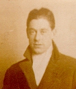
The 59th Division was eventually sent to France in February of 1917 and served on the Somme. During the German retreat to the Hindenburg Line William is mentioned in the Battalion War Diary for his bravery and subsequent promotion to Lance Corporal.
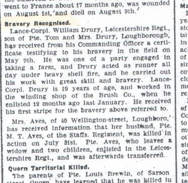
His Battalion also served at the Third Battle of Ypres from July to November 1917 as part of the XVIII Corps, Fifth Army. After the battle, the 2/5th Leicestershire Battalion was so depleted it was disbanded . William Drury was then transferred to the 11th Leicestershire Regiment, a Pioneer Battalion.
The 11th Leicesters played a full part in the final push of the war until its end on Bill's 21st birthday on 11th November 1918. He remained in the army for a few more months and was in Germany for a brief time as part of the occupying forces south of Cologne. He was finally demobilised at Catterick in April 1919.

On his return home in 1919 Bill lived with his mother, sister and 2 year old brother, Lyn, in Shepshed Leicestershire. Bill's father had been killed in Pernes, France in July 1918 but his mother Lucy had already met another man, widower James Dean. Lucy married James in April 1920 and the relationship between Bill and his stepfather was strained, especially after his sister married Robert Keeling and moved out of the family home in March 1921. In April Bill's little brother dies aged 4. By this time the family had moved to Woodborough Road in Nottingham and Bill had found work as an armature winder.
Between 1924 and 1927 Bill is living with his parents at Kildare Road. He was 29 years of age and it was around this time that he met May Croome (formerly Fowler) . May left her husband William Croome in about 1925 and this likely that Bill moved in with May who was living with her brother Jack in Hutton Street. It was at Hutton Street that May gave birth to their first child Mavis in May 1928. Within months they had moved to Staines in Middlesex, possibly to escape the scandal of May's divorce. Bill had been cited as an adulterer in the divorce case. This was the start of the Great Depression and it is likely that they also moved south in search of work. May's divorce was finally granted on 12 May 1930 and the couple wasted no time in getting married at Staines Register Office on 12 July 1930. Whilst in Croydon Bill worked as an electrician and May found work as a domestic in the flyers hostel at Croydon Aerodrome.
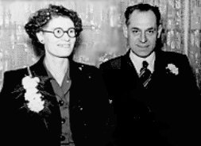
By 1933 Bill, May and Mavis returned to Nottingham to Overdale Road in Sneinton staying with May's mother. In the same year she gave birth to their second daughter, Sheila, and this may have been the reason for their return. On their return to Nottingham Bill took up employment with British Celanese at Spondon, where he remained until his retirement.
Sadly, Sheila died before her second birthday. A few months later May gave birth to twin girls, June and Jean. In 1936 the family moved to their new council house in Deepdene Way and remained there most of their lives.
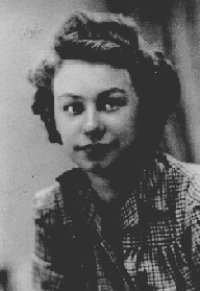
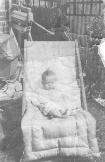
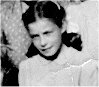
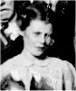
Bill travelled each day from Cinderhill to Spondon for over 30 years. He received a long service watch inscribed 'COURTAULDS LONG SERVICE AWARD W.DRURY 1963'. He was also a member of the Electricians Union for over 40 years. He retired in August 1964.
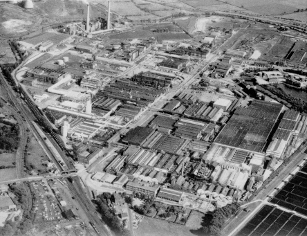
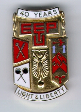
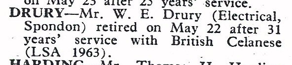
William joined the British Legion on 5 October 1970 and was an active member during his retirement. He lived out the majority of his retirement at his home in Deepdene Way and for over 50 years he also enjoyed a pint at the 'Cocked Hat' in Cinderhill, Nottingham.
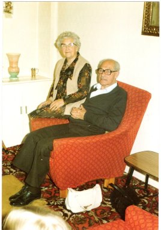
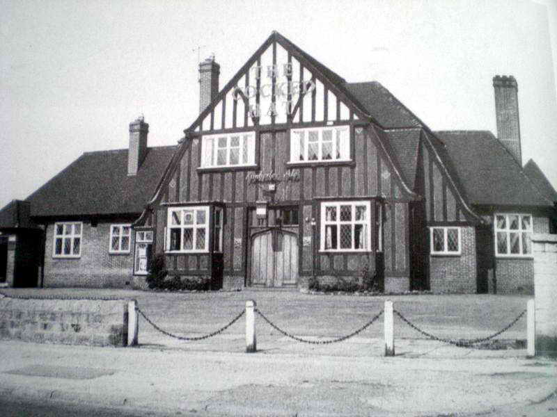
Bill died in Nottingham on 23 December 1988.